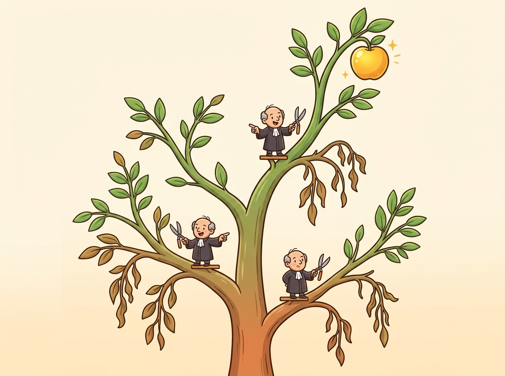

Show your work. It is not just good advice for students; it turns out to be good advice for language models too.
Prompt AI Agent
Prerequisites
This section builds on the foundational prompt patterns from Section 11.1 (zero-shot, few-shot, role prompting). Understanding of how attention mechanisms process context from Section 03.2 and the decoding strategies from Section 05.1 will help explain why chain-of-thought prompting improves reasoning quality.
Why reasoning techniques matter. Standard prompting asks a model to jump directly from question to answer. For simple factual lookups, this works fine. But for multi-step reasoning, math problems, logic puzzles, and complex analysis, direct answering leads to frequent errors. Chain-of-Thought (CoT) prompting, introduced by Wei et al. (2022), showed that simply asking the model to "think step by step" before answering can dramatically improve accuracy on reasoning tasks. Building on the foundational techniques from Section 11.1, this section covers CoT and its successors: self-consistency (sample multiple reasoning paths and vote), Tree-of-Thought (structured exploration with backtracking), step-back prompting, and the ReAct framework that interleaves reasoning with tool use.

1. Chain-of-Thought Prompting Intermediate

"Chain-of-Thought Prompting Elicits Reasoning in Large Language Models" demonstrated that providing step-by-step reasoning examples in the prompt dramatically improves performance on arithmetic, commonsense, and symbolic reasoning tasks. The key contribution was showing that reasoning ability is an emergent property: it appears in models above ~100B parameters and is absent in smaller models. This paper launched an entire subfield of reasoning-oriented prompt engineering.
Chain-of-Thought prompting works by encouraging the model to generate intermediate reasoning steps before producing a final answer. The mechanism is straightforward: each reasoning step conditions the generation of subsequent steps, allowing the model to "carry" information forward through the computation. Without CoT, the model must compress all reasoning into a single forward pass through the network. With CoT, the model effectively uses its own generated text as a scratchpad, offloading intermediate computation into the token sequence.
Without CoT, the model must fit all reasoning into a single forward pass through the transformer. With CoT, the model's own output tokens become working memory. Each generated reasoning step is literally fed back into the model as input for the next step, just as you would use a scratchpad to carry intermediate results. This is why CoT helps on multi-step problems: it gives the model a place to store intermediate results that its fixed-size hidden state cannot hold all at once.
1.1 Zero-Shot CoT
The simplest form of CoT requires no examples at all. Kojima et al. (2022) discovered that appending the phrase "Let's think step by step" to a prompt is sufficient to trigger reasoning behavior in large models. (For models with built-in reasoning, such as o3 and DeepSeek-R1, see Section 11.5 on prompting reasoning models.) This zero-shot CoT approach is remarkably effective, improving accuracy on GSM8K (grade school math) from 17.7% to 78.7% for PaLM 540B.
Code Fragment 11.2.1 illustrates a chat completion call.
import openai
# Initialize OpenAI client (reads OPENAI_API_KEY from env)
client = openai.OpenAI()
def solve_with_cot(problem: str) -> str:
"""Solve a problem using zero-shot Chain-of-Thought."""
# Send chat completion request to the API
response = client.chat.completions.create(
model="gpt-4o",
messages=[
{"role": "system",
"content": """Solve the problem step by step.
Show your reasoning clearly, then provide the final answer
on a separate line starting with "ANSWER: "."""},
{"role": "user",
"content": problem}
],
temperature=0.0
)
# Extract the generated message from the API response
return response.choices[0].message.content
problem = """A store sells notebooks for $4 each. If you buy 5 or more,
you get a 20% discount on the entire purchase. Sarah buys 7 notebooks
and pays with a $50 bill. How much change does she receive?"""
print(solve_with_cot(problem))
solve_with_cot(). The system prompt instructs the model to "solve step by step" and output a final line prefixed with "ANSWER: ", producing an auditable reasoning trace. Setting temperature=0.0 ensures deterministic step-by-step arithmetic.1.2 Few-Shot CoT
For tasks where zero-shot CoT is insufficient, providing examples of step-by-step reasoning significantly improves performance. The key insight is that the examples teach the model not just the answer format, but the style of reasoning to apply. Different reasoning styles suit different tasks: arithmetic problems benefit from sequential calculation steps, logic problems benefit from listing premises and drawing inferences, and coding problems benefit from planning before implementing.
Code Fragment 11.2.2 illustrates a chat completion call.
import openai
# Initialize OpenAI client (reads OPENAI_API_KEY from env)
client = openai.OpenAI()
# Few-shot CoT: provide exemplar reasoning chains
FEW_SHOT_EXAMPLES = """
Example 1:
Q: A train travels 120 miles in 2 hours. It then travels 90 miles in 1.5 hours. What is the average speed for the entire trip?
A: Let me work through this step by step.
Total distance = 120 + 90 = 210 miles
Total time = 2 + 1.5 = 3.5 hours
Average speed = total distance / total time = 210 / 3.5 = 60 mph
ANSWER: 60 mph
Example 2:
Q: A store has a "buy 2, get 1 free" deal on $6 shirts. How much do 7 shirts cost?
A: Let me work through this step by step.
For every 3 shirts, you pay for 2: that is 2 x $6 = $12 per group of 3.
7 shirts = 2 complete groups (6 shirts) + 1 remaining shirt.
Cost for 6 shirts = 2 x $12 = $24
Cost for 1 extra shirt = $6
Total = $24 + $6 = $30
ANSWER: $30
"""
def solve_with_few_shot_cot(problem: str) -> str:
# Send chat completion request to the API
response = client.chat.completions.create(
model="gpt-4o",
messages=[
{"role": "system",
"content": f"""Solve problems step by step, following the style shown in these examples:
{FEW_SHOT_EXAMPLES}
Show your reasoning clearly, then provide the final answer on a line starting with "ANSWER: "."""},
{"role": "user", "content": problem}
],
temperature=0.0
)
# Extract the generated message from the API response
return response.choices[0].message.content
problem = """A bakery sells cupcakes for $3 each. If you buy a dozen (12),
you get a 25% discount. Maria buys 15 cupcakes. How much does she pay?"""
print(solve_with_few_shot_cot(problem))
FEW_SHOT_EXAMPLES embedded in the system prompt to teach a specific reasoning style. The function solve_with_few_shot_cot() injects worked examples before the user problem, guiding the model to replicate the demonstrated step-by-step calculation pattern.CoT prompting improves accuracy primarily on tasks that require multi-step reasoning. For single-step tasks (simple factual recall, sentiment classification), CoT adds unnecessary tokens without improving quality and may even slightly reduce accuracy due to the additional opportunity for the model to "talk itself into" a wrong answer. The rule of thumb: if a human needs a scratchpad to solve the problem, CoT will help. If a human can answer instantly, CoT is unnecessary overhead.
Figure 11.2.1 contrasts direct prompting with chain-of-thought, showing how decomposition into intermediate steps enables verification at each stage.
Why does chain-of-thought work mechanistically? The key insight is that transformers compute each output token conditioned on all previous tokens. When the model generates reasoning steps as intermediate tokens, those tokens become part of the input for subsequent generation. In effect, the model is augmenting its own context window with intermediate computation results. Without CoT, a model tackling "17 x 23 + 45" must compute the entire answer in a single forward pass through its layers. With CoT, it first generates "17 x 23 = 391" as text tokens, and then those tokens are fed back into the model as context for computing "391 + 45 = 436." Each forward pass handles a simpler sub-problem. This is why CoT helps specifically on multi-step problems: it decomposes a hard problem into a sequence of easy problems, where each step's output becomes the next step's input.
2. Self-Consistency Intermediate
Self-consistency works by asking the model the same question multiple times and taking a majority vote. It is the "ask the audience" lifeline from Who Wants to Be a Millionaire, except every audience member is the same model running at different temperatures. Surprisingly, this simple trick boosted GSM8K math accuracy by over 10 percentage points.
"Self-Consistency Improves Chain of Thought Reasoning in Language Models" showed that sampling multiple reasoning paths and taking a majority vote dramatically outperforms greedy single-path CoT. On GSM8K, self-consistency pushed accuracy from 78.7% to over 90% for PaLM 540B. The key insight: correct reasoning paths tend to converge on the same answer, while errors are randomly distributed across wrong answers.
Self-consistency, introduced by Wang et al. (2022), builds on CoT by sampling multiple reasoning paths at non-zero temperature and selecting the answer that appears most frequently. The intuition is that while any single reasoning chain might contain errors, different chains are likely to make different errors. When multiple independent chains converge on the same answer, confidence in that answer increases.
2.1 Implementation
Code Fragment 11.2.3 illustrates a chat completion call.
# Self-consistency: sample multiple CoT paths, then majority-vote
# Higher temperature (0.7) ensures diverse reasoning paths
import openai
from collections import Counter
# Initialize OpenAI client (reads OPENAI_API_KEY from env)
client = openai.OpenAI()
def solve_with_self_consistency(problem: str, n_samples: int = 5) -> dict:
"""Sample multiple CoT paths and take majority vote."""
answers = []
for _ in range(n_samples):
# Send chat completion request to the API
response = client.chat.completions.create(
model="gpt-4o",
messages=[
{"role": "system",
"content": """Solve step by step. End with ANSWER: <number>"""},
{"role": "user", "content": problem}
],
temperature=0.7 # Higher temperature for diverse paths
)
# Extract the generated message from the API response
text = response.choices[0].message.content
# Extract the final answer
if "ANSWER:" in text:
answer = text.split("ANSWER:")[-1].strip()
answers.append(answer)
# Majority vote
vote_counts = Counter(answers)
best_answer, count = vote_counts.most_common(1)[0]
return {
"answer": best_answer,
"confidence": count / len(answers),
"all_answers": dict(vote_counts)
}
result = solve_with_self_consistency(
"If a train travels at 60 mph for 2.5 hours, then at 80 mph for 1.5 hours, "
"what is the total distance traveled?"
)
print(f"Answer: {result['answer']}")
print(f"Confidence: {result['confidence']:.0%}")
print(f"All votes: {result['all_answers']}")
solve_with_self_consistency() samples n=5 reasoning paths at temperature=0.7, extracts each answer after the "ANSWER:" delimiter, then uses Counter.most_common() to pick the majority answer and report a confidence ratio.Self-consistency requires temperature > 0 to generate diverse reasoning paths. If temperature is zero, every sample produces identical output, defeating the purpose. A temperature of 0.5 to 0.7 provides a good balance between diversity and quality. Higher temperatures produce more diverse paths but increase the chance of individually nonsensical reasoning chains.
3. Tree-of-Thought (ToT) Intermediate
Tree-of-Thought (Yao et al., 2023) extends CoT by exploring multiple reasoning paths in a structured tree, with the ability to evaluate and backtrack. While CoT follows a single linear chain and self-consistency samples independent chains, ToT builds a branching exploration tree where the model can evaluate partial solutions, prune unpromising branches, and explore alternatives.
Tree-of-Thought is an elegant research technique, but it requires 10 to 50+ API calls per query (one for each node explored in the tree). At $0.01 per call, a single ToT query can cost $0.10 to $0.50. For production workloads, self-consistency (3 to 5 calls) achieves most of the accuracy benefit at a fraction of the cost. Use ToT only for high-value, low-volume tasks like planning, puzzle solving, or complex code generation where the cost per query is justified.
The ToT framework has three core components:
- Thought generation: At each step, the model proposes multiple possible next steps (branches).
- Thought evaluation: The model (or a separate evaluator) scores each branch on how promising it looks.
- Search strategy: A search algorithm (typically breadth-first or depth-first) navigates the tree, expanding the most promising nodes and pruning dead ends.
Figure 11.2.2 illustrates this branching exploration, where each node is evaluated and only promising paths are expanded further.
3.1 Simplified ToT Implementation
Code Fragment 11.2.4 illustrates a chat completion call.
# Tree-of-Thought: generate candidate steps, evaluate each, prune weak branches
# Uses a separate evaluation call to score reasoning quality at each step
import openai
# Initialize OpenAI client (reads OPENAI_API_KEY from env)
client = openai.OpenAI()
def generate_thoughts(problem: str, context: str, n: int = 3) -> list[str]:
"""Generate n candidate next steps."""
# Send chat completion request to the API
response = client.chat.completions.create(
model="gpt-4o",
messages=[{"role": "user",
"content": f"""Problem: {problem}
Progress so far: {context}
Generate {n} different possible next steps. Number them 1, 2, 3.
Each should be a single reasoning step."""}],
temperature=0.8
)
# Extract the generated message from the API response
text = response.choices[0].message.content
return [line.strip() for line in text.split("\n") if line.strip()]
def evaluate_thought(problem: str, thought: str) -> float:
"""Score a thought from 0 to 1."""
response = client.chat.completions.create(
model="gpt-4o",
messages=[{"role": "user",
"content": f"""Problem: {problem}
Proposed reasoning step: {thought}
Rate this step from 0.0 to 1.0 based on correctness and
usefulness. Respond with only a number."""}],
temperature=0.0
)
try:
return float(response.choices[0].message.content.strip())
except ValueError:
return 0.5
# Example: solve with tree exploration
problem = "Find two numbers that multiply to 36 and add to 13."
thoughts = generate_thoughts(problem, "(starting)")
for t in thoughts[:3]:
score = evaluate_thought(problem, t)
print(f" [{score:.2f}] {t}")
generate_thoughts() proposes multiple next steps at temperature=0.8 for diversity, while evaluate_thought() scores each candidate from 0.0 to 1.0 at temperature=0.0 for deterministic evaluation. The scored thoughts enable pruning of unpromising branches.4. Step-Back Prompting Intermediate
Step-back prompting (Zheng et al., 2023) takes the opposite approach from diving into details. Instead of reasoning through the specific problem, it first asks the model to identify the abstract principle or high-level concept, then applies that principle to solve the specific problem. This is particularly effective for science, math, and policy questions where the correct reasoning requires recalling a general rule before applying it.
The two-phase approach works as follows. First, generate a "step-back" question: "What general principle or concept is relevant to this problem?" Then, use the model's answer to that abstract question as context for solving the original specific problem. This prevents the model from getting lost in surface-level details and grounds its reasoning in correct foundational knowledge.
Code Fragment 11.2.5 illustrates a chat completion call.
# Step-back prompting: abstract the principle first, then solve
# Phase 1 identifies the relevant law; Phase 2 applies it
import openai
# Initialize OpenAI client (reads OPENAI_API_KEY from env)
client = openai.OpenAI()
def step_back_solve(question: str) -> str:
"""Two-phase step-back prompting: abstract first, then solve."""
# Phase 1: Generate the step-back (abstract) question
abstraction = client.chat.completions.create(
model="gpt-4o",
messages=[
{"role": "system",
"content": "Given a specific question, identify the general principle or foundational concept needed to answer it. Respond with ONLY the principle, not the answer to the original question."},
{"role": "user", "content": question}
],
temperature=0.0
)
principle = abstraction.choices[0].message.content
print(f"Step-back principle: {principle[:120]}...")
# Phase 2: Solve using the principle as context
solution = client.chat.completions.create(
model="gpt-4o",
messages=[
{"role": "system",
"content": f"Use this foundational principle to answer the question:\n\n{principle}"},
{"role": "user", "content": question}
],
temperature=0.0
)
return solution.choices[0].message.content
answer = step_back_solve(
"If the temperature of an ideal gas is doubled while keeping "
"the volume constant, what happens to its pressure?"
)
print(f"\nAnswer: {answer}")
step_back_solve(). Phase 1 asks the model to identify the general principle (here, Gay-Lussac's Law) without answering the question. Phase 2 feeds that principle into the system message as context, grounding the final answer in the correct foundational knowledge.Step-back prompting excels on questions where domain knowledge recall is the bottleneck, not multi-step computation. Physics, chemistry, law, and policy questions often benefit because the model needs to recall the correct rule before applying it. For pure arithmetic or logic problems, standard CoT is usually sufficient. Step-back prompting adds one extra LLM call per question, so it doubles latency and cost; use it selectively for high-value queries where accuracy matters more than speed.
5. The ReAct Framework Intermediate
Why this matters: ReAct is the bridge between prompt engineering and agentic AI. Up to this point, all prompting techniques operate within the model's existing knowledge. But real-world tasks often require current information (stock prices, weather, database records) that the model cannot know from pre-training. ReAct solves this by interleaving reasoning with tool use: the model thinks about what information it needs, calls a tool to get it, observes the result, and continues reasoning. This pattern is the foundation of the agent architectures covered in Chapter 22.
ReAct (Yao et al., 2022) combines Reasoning and Acting in an interleaved loop. The model alternates between generating reasoning traces (thinking about what to do) and taking actions (calling tools, searching databases, executing code). This pattern is fundamental to modern LLM agents and represents the bridge between prompt engineering and agentic AI. Chapter 22 explores full agent architectures that build on the ReAct pattern, including multi-turn tool use, planning loops, and error recovery.
5.1 The ReAct Loop
Code Fragment 11.2.6 illustrates a chat completion call.
# ReAct agent: interleave reasoning (THINK) with tool use (ACT)
# Runs up to 5 iterations of search-and-reason before producing a final answer
import openai, json
# Initialize OpenAI client (reads OPENAI_API_KEY from env)
client = openai.OpenAI()
TOOLS = [
{"type": "function",
"function": {
"name": "search",
"description": "Search for information on a topic",
"parameters": {
"type": "object",
"properties": {
"query": {"type": "string", "description": "Search query"}
},
"required": ["query"]
}
}}
]
REACT_SYSTEM = """You are a research assistant. For each question:
1. THINK: Reason about what information you need
2. ACT: Use the search tool to find information
3. OBSERVE: Analyze the search results
4. Repeat THINK/ACT/OBSERVE until you have enough information
5. Provide a final, well-sourced answer"""
def react_agent(question: str) -> str:
messages = [
{"role": "system", "content": REACT_SYSTEM},
{"role": "user", "content": question}
]
for step in range(5): # Max 5 iterations
# Send chat completion request to the API
response = client.chat.completions.create(
model="gpt-4o",
messages=messages,
tools=TOOLS,
tool_choice="auto"
)
# Extract the generated message from the API response
msg = response.choices[0].message
if msg.tool_calls:
# Model wants to use a tool (ACT)
messages.append(msg)
for call in msg.tool_calls:
result = execute_search(
json.loads(call.function.arguments)["query"]
)
messages.append({
"role": "tool",
"tool_call_id": call.id,
"content": result
})
else:
# Model has enough info, return final answer
return msg.content
return "Max iterations reached without final answer."
react_agent() that interleaves reasoning and tool use over up to 5 iterations. The REACT_SYSTEM prompt defines the Think/Act/Observe cycle, tool_choice="auto" lets the model decide when to search, and the loop terminates when the model produces a final answer without requesting any tool calls.Advanced reasoning techniques like self-consistency and ToT multiply the number of API calls per query. Self-consistency with 5 samples costs 5x a single CoT call. ToT can require 10 to 50 calls depending on the branching factor and depth. Always consider the cost-accuracy tradeoff. For a batch of 10,000 queries, self-consistency with n=5 at $0.01 per call adds up to $500 compared to $100 for single CoT. The improvement from 90% to 95% accuracy must be worth the 5x cost increase for your use case.
6. Comparison of Reasoning Techniques Intermediate
| Technique | API Calls | Best For | Limitation |
|---|---|---|---|
| Zero-shot CoT | 1 | Simple multi-step reasoning | Single path can still err |
| Few-shot CoT | 1 | Domain-specific reasoning style | Requires good examples |
| Self-consistency | n (typically 5 to 20) | Math, logic, factual questions | High cost; assumes closed-form answer |
| Tree-of-Thought | 10 to 50+ | Complex planning, puzzles | Very expensive; complex to implement |
| Step-back prompting | 2 | Science, policy, principle-based questions | Adds latency; not useful for procedural tasks |
| ReAct | 2 to 10+ | Questions requiring external information | Requires tool infrastructure |
7. Choosing a Reasoning Technique: Decision Flowchart Intermediate
With multiple reasoning techniques available, selecting the right one for a given task is itself a decision problem. The following flowchart (Figure 11.2.4) provides a practical starting point. Start at the top and follow the questions to arrive at a recommended technique.
Providers now offer reasoning models with built-in chain-of-thought: OpenAI's o3 and o4-mini, DeepSeek R1, and Claude's extended thinking mode. These models perform multi-step reasoning internally without needing explicit CoT prompting. When using a reasoning model, adding "think step by step" to your prompt is redundant and may even degrade quality. The decision is: pay for a more expensive reasoning model that handles reasoning natively, or use a standard model with explicit CoT prompting at lower per-token cost but more prompt engineering effort.
📝 Section Quiz
1. Why does CoT prompting improve accuracy on math problems but not on simple sentiment classification?
Show Answer
2. Self-consistency uses temperature > 0 while standard CoT often uses temperature = 0. Explain why.
Show Answer
3. How does Tree-of-Thought differ from running self-consistency multiple times?
Show Answer
4. In the ReAct framework, what happens if the model enters an infinite loop of searching without producing a final answer?
Show Answer
5. When would you choose step-back prompting over standard CoT?
Show Answer
Experiment with the CoT examples from this section:
- Take the zero-shot CoT example and remove "step by step" from the system prompt. Compare the accuracy on a multi-step math problem. How many problems does it get wrong without the CoT trigger?
- In the self-consistency example, change the number of samples from 5 to 1, 3, 10, and 20. Plot the accuracy at each sample count. At what point do additional samples stop helping?
- Try adding CoT to a simple yes/no factual question (e.g., "Is Python a compiled language?"). Observe whether the model "overthinks" and produces a less confident or incorrect answer. This demonstrates why CoT can hurt on simple tasks.
When you need parseable output, explicitly request JSON and provide a schema example in your prompt. Add "Respond ONLY with valid JSON, no other text" to reduce the chance of preamble text. For critical applications, use the API's native JSON mode if available.
Key Takeaways
- Chain-of-Thought is the single most impactful prompting technique for reasoning tasks. "Think step by step" can improve math accuracy from under 20% to over 78%, and it costs nothing extra in implementation complexity.
- Self-consistency trades cost for accuracy. Sampling 5 to 10 reasoning paths and voting raises accuracy further, but multiplies API cost linearly. Use it when correctness is worth the expense.
- Tree-of-Thought is powerful but expensive. Reserve it for complex planning problems where early pruning of bad paths saves overall computation compared to exhaustive self-consistency sampling.
- Step-back prompting grounds reasoning in principles. For science, law, and domain-specific reasoning, abstracting before solving prevents the model from getting lost in surface-level details.
- ReAct bridges prompting and agents. By interleaving reasoning with tool use, ReAct enables the model to access external information and take actions, forming the foundation of modern AI agent architectures.
- Always match the technique to the task. Simple tasks need simple prompts. Complex tasks need complex reasoning strategies. Overengineering wastes cost; underengineering wastes accuracy.
Who: A health-tech startup's ML team building an AI-assisted symptom checker that suggests urgency levels (emergency, urgent, routine, self-care) for patient-reported symptoms.
Situation: Their chain-of-thought prompt achieved 81% agreement with physician triage decisions on a benchmark of 2,000 cases, but the 19% error rate was unacceptable for a safety-critical application, particularly for false negatives (under-triaging emergencies).
Problem: Single CoT reasoning paths sometimes fixated on the most obvious symptom while missing combinations that indicated higher urgency (e.g., mild chest pain plus shortness of breath plus age over 60).
Dilemma: They could fine-tune a specialized model (months of work, regulatory implications), add more medical context to the prompt (marginal gains, context window limits), or use self-consistency sampling with majority voting (5x cost increase per query).
Decision: They implemented self-consistency with 7 reasoning paths at temperature 0.7, using weighted majority voting where paths that mentioned more symptoms received slightly higher weight.
How: Each query spawned 7 parallel API calls with the same CoT prompt. A lightweight post-processing step extracted the triage level from each path and applied majority voting. For cases where no category received a majority, the system defaulted to the highest urgency level mentioned.
Result: Agreement with physician decisions rose from 81% to 91%. False negatives (missed emergencies) dropped by 72%, which was the most critical improvement. The 7x cost increase was offset by running the system only for cases where a single-path confidence score fell below 0.85, covering roughly 30% of total queries.
Lesson: Self-consistency is most valuable for high-stakes decisions where a single reasoning path may miss important factors; applying it selectively (only on uncertain cases) controls cost while maximizing safety gains.
Reasoning tokens and internal chain-of-thought. Models like OpenAI o1/o3 and DeepSeek-R1 internalize chain-of-thought reasoning, generating "thinking" tokens before producing answers. This shifts CoT from a prompting technique to a model capability, as explored in Section 10.4 and Section 11.5.
Self-consistency and verification. Research on self-consistency (Wang et al., 2023) shows that sampling multiple reasoning paths and taking the majority answer significantly improves accuracy, especially on math and logic tasks, at the cost of higher inference compute.
Faithful versus unfaithful reasoning. Studies reveal that CoT explanations do not always reflect the model's actual reasoning process. The model may arrive at the correct answer through shortcuts while generating a plausible-looking explanation. This has implications for using CoT as an interpretability tool, a topic explored further in Section 18.1.
Exercises
Explain why Chain-of-Thought prompting improves accuracy on multi-step reasoning problems. What role does the model's own generated text play?
Answer Sketch
Without CoT, the model must compress all reasoning into a single forward pass through the transformer. With CoT, the model generates intermediate reasoning steps that are fed back as input for subsequent steps, effectively using its own output tokens as working memory. Each step conditions the generation of the next step, allowing the model to carry intermediate results through the computation.
Write a function that takes a math word problem as input and solves it using zero-shot CoT. The function should append 'Let's think step by step' to the prompt and then extract the final numerical answer from the response.
Answer Sketch
Send the problem with 'Let\'s think step by step' appended. Parse the response to find the final answer, typically after phrases like 'the answer is' or 'therefore'. Use a regex like re.search(r'(?:answer is|therefore|=)\s*\$?([\d,.]+)', response) to extract the number. Return both the full reasoning chain and the extracted answer.
Describe the self-consistency technique. Why does sampling multiple reasoning paths and taking a majority vote improve accuracy compared to a single CoT chain?
Answer Sketch
Self-consistency samples N independent reasoning chains at temperature > 0, then takes a majority vote on the final answers. It improves accuracy because different reasoning paths may make different errors, but correct answers tend to converge. A single chain might follow a flawed reasoning path; with multiple samples, the correct answer is more likely to appear in the majority. It trades compute cost (N times more tokens) for reliability.
Implement a simplified Tree-of-Thought solver for a puzzle problem. Generate 3 candidate partial solutions at each step, evaluate them with a scoring prompt, prune the weakest, and continue with the top 2.
Answer Sketch
At each step: (1) Generate 3 continuations from each active path using separate API calls. (2) For each continuation, ask the model to rate it 1 to 10 for correctness and promise. (3) Keep the top 2 rated paths. (4) Repeat for N steps. Use a BFS-like loop with a priority queue of (score, partial_solution) tuples. The final answer is the highest-scored complete solution.
Compare the ReAct pattern (interleaving reasoning and action) with pure Chain-of-Thought. For a question like 'What is the population of the city where the 2024 Olympics were held?', trace through both approaches and identify where pure CoT might fail.
Answer Sketch
Pure CoT attempts to reason from memorized knowledge, which may be outdated or incorrect (e.g., guessing the city or population). ReAct interleaves: Thought: 'I need to find the 2024 Olympics host city.' Action: search('2024 Olympics host city'). Observation: 'Paris'. Thought: 'Now I need Paris population.' Action: search('Paris population'). Observation: '2.1 million.' Answer: '2.1 million.' ReAct succeeds because it grounds reasoning in external tool results rather than relying on potentially stale parametric knowledge.
What Comes Next
In the next section, Section 11.3: Advanced Prompt Patterns, we examine advanced prompt patterns including few-shot learning, self-consistency, and meta-prompting.
The seminal paper that introduced chain-of-thought prompting. Demonstrates that adding "let's think step by step" or providing reasoning examples dramatically improves performance on arithmetic, commonsense, and symbolic reasoning tasks.
Kojima, T. et al. (2022). Large Language Models are Zero-Shot Reasoners. NeurIPS 2022.
Shows that simply appending "Let's think step by step" to a prompt (zero-shot CoT) achieves surprisingly strong results without any examples. A must-read companion to the Wei et al. paper for understanding the minimal effective dose of reasoning prompts.
Introduces self-consistency: sampling multiple reasoning paths and taking the majority vote. Achieves significant accuracy gains over single-path CoT across diverse benchmarks, at the cost of increased API calls.
Extends CoT into a tree-structured search where the model explores multiple reasoning branches, evaluates partial solutions, and backtracks. Most effective for problems with discrete solution steps like puzzles and planning tasks.
Proposes step-back prompting, where the model first identifies high-level principles before solving a specific problem. Particularly effective for science and knowledge-intensive reasoning tasks.
Yao, S. et al. (2023). ReAct: Synergizing Reasoning and Acting in Language Models. ICLR 2023.
Introduces the ReAct framework that interleaves reasoning traces with tool-use actions. The foundation for most modern agent architectures, combining CoT's reasoning benefits with the ability to retrieve information and execute code.